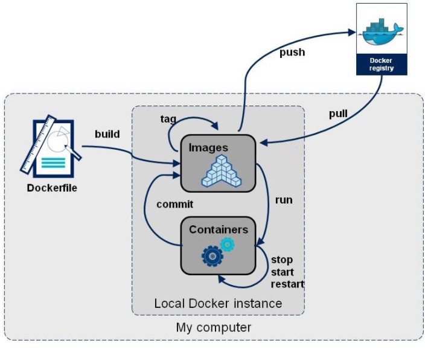

docker简介
几个重要的概念，镜像（image），容器（container），仓库（repository）
Docker 本身是一个容器运行载体或称之为管理引擎。我们把应用程序和配置依赖打包好形成一个可交付的运行环境，这个打包好的运行环境就似乎 image镜像文件。只有通过这个镜像文件才能生成 Docker 容器。image 文件可以看作是容器的模板。Docker 根据 image 文件生成容器的实例。同一个 image 文件，可以生成多个同时运行的容器实例。
image 文件生成的容器实例，本身也是一个文件，称为镜像文件。
一个容器运行一种服务，当我们需要的时候，就可以通过docker客户端创建一个对应的运行实例，也就是我们的容器
至于仓储，就是放了一堆镜像的地方，我们可以把镜像发布到仓储中，需要的时候从仓储中拉下来就可以了。
docker的安装
mac下docker的安装
账号（用户名xiaobais）
1 | brew install docker |
ubuntu docker安装
1 | //错误解决 |
hello-world
阿里云镜像加速
- dev.aliyun.com进行登录
- 在服务中搜索-》容器镜像服务
- 镜像中心-》镜像加速器
- 按照对应的教程进行
docker为什么比虚拟机快
(1)docker有着比虚拟机更少的抽象层。
(2)docker利用的是宿主机的内核,而不需要Guest OS。
docker常用命令
docker帮助命令
1 | docker version |
docker镜像命令
docker images
列出本地的镜像模板Options
-a 列出本地的所有镜像
-q 只显示对象的ID
–digests: 显示对象的摘要信息
–no-trunc: 显示完整的信息docker searchOptions
-s 列出点赞数不小于指定值的镜像
-no-truncdocker pull 《镜像名》Options
docker pull 镜像名 等价于 docker pull 镜像名:lastest
docker pull 镜像名[:TAG]docker rmiOptions
删除单个镜像 docker rmi -f 镜像名
删除多个镜像 docker rmi -f 镜像名:TAG 镜像名2:TAG
删除全部 dockr rmi -f $(docker images -qa)
docker容器命令
- 新建并启动容器
docker run [OPTIONS] IMAGE [COMMAND][ARG...]docker run -it IMAGE启用交互式容器
OPTIONS
–name=”容器的新名字”：为容器制定一个名称
-i：以交互模式运行容器，通常与 -t 同时使用；
-t：为容器重新分配一个伪输入终端，通常与 -i 同时使用；
-d: 后台运行容器，并返回容器ID，也即启动守护式容器；
-P: 随机端口映射；
-p: 指定端口映射，有以下四种格式
ip:hostPort:containerPort
ip::containerPort
hostPort:containerPort
containerPort
列出所有正在运行的容器
docker psOPTIONS说明（常用）：
-a :列出当前所有正在运行的容器+历史上运行过的
-l :显示最近创建的容器。
-n：显示最近n个创建的容器。
-q :静默模式，只显示容器编号。
–no-trunc :不截断输出。启动容器
docker start重启容器
docker restart停止容器
docker stop强制停止容器
docker kill删除已停止容器
docker rm
删除多个容器
docker rm -f $(docker ps -a -q)docker ps -a -q |xargs docker rmdocker container prune删除所有容器
进入后台容器
docker exec -it 1e560fca3906 /bin/bash这样在退出容器时，容器仍在后台docker attach也可以进入后台容器，但是退出时，后台容器立即退出。导出/导入容器
docker export 1e560fca3906 > ubuntu.tardocker import ubuntu.tar查看容器内部进程
docker top eebf90bbfe24查看docker底层信息
docker inspect eebf90bbfe24
重要
- 启用守护式容器
docker run -d IMAGE后台运行docker run -d mycentos /bin/sh -c "while true;do echo hello xx;sleep 2;done" - 查看容器日志
docker logs -f -t --tail 容器id - 查看容器内进程
docker top - 查看容器内部细节
docker inspect - 进入正在运行的容器并以命令行交互
- 进入容器
docker attach 容器id - 在容器中执行命令
docker exec -it 容器id COMMAND - 在容器中执行命令并以命令行交互
docker exec -it 容器id /bin/bash此时使用exit退出容器并不会关闭容器
- 将容器内数据拷贝到主机上
docker cp 容器id:地址 本地地址
- 提交容器副本，使之成为新的镜像
docker commitdocker commit -m="描述信息" -a="作者" 容器id 要创建的镜像的名称:[标签名]
docker命令总结

attach Attach to a running container # 当前 shell 下 attach 连接指定运行镜像
build Build an image from a Dockerfile # 通过 Dockerfile 定制镜像
commit Create a new image from a container changes # 提交当前容器为新的镜像
cp Copy files/folders from the containers filesystem to the host path #从容器中拷贝指定文件或者目录到宿主机中
create Create a new container # 创建一个新的容器，同 run，但不启动容器
diff Inspect changes on a container’s filesystem # 查看 docker 容器变化
events Get real time events from the server # 从 docker 服务获取容器实时事件
exec Run a command in an existing container # 在已存在的容器上运行命令
export Stream the contents of a container as a tar archive # 导出容器的内容流作为一个 tar 归档文件[对应 import ]
history Show the history of an image # 展示一个镜像形成历史
images List images # 列出系统当前镜像
import Create a new filesystem image from the contents of a tarball # 从tar包中的内容创建一个新的文件系统映像[对应export]
info Display system-wide information # 显示系统相关信息
inspect Return low-level information on a container # 查看容器详细信息
kill Kill a running container # kill 指定 docker 容器
load Load an image from a tar archive # 从一个 tar 包中加载一个镜像[对应 save]
login Register or Login to the docker registry server # 注册或者登陆一个 docker 源服务器
logout Log out from a Docker registry server # 从当前 Docker registry 退出
logs Fetch the logs of a container # 输出当前容器日志信息
port Lookup the public-facing port which is NAT-ed to PRIVATE_PORT # 查看映射端口对应的容器内部源端口
pause Pause all processes within a container # 暂停容器
ps List containers # 列出容器列表
pull Pull an image or a repository from the docker registry server # 从docker镜像源服务器拉取指定镜像或者库镜像
push Push an image or a repository to the docker registry server # 推送指定镜像或者库镜像至docker源服务器
restart Restart a running container # 重启运行的容器
rm Remove one or more containers # 移除一个或者多个容器
rmi Remove one or more images # 移除一个或多个镜像[无容器使用该镜像才可删除，否则需删除相关容器才可继续或 -f 强制删除]
run Run a command in a new container # 创建一个新的容器并运行一个命令
save Save an image to a tar archive # 保存一个镜像为一个 tar 包[对应 load]
search Search for an image on the Docker Hub # 在 docker hub 中搜索镜像
start Start a stopped containers # 启动容器
stop Stop a running containers # 停止容器
tag Tag an image into a repository # 给源中镜像打标签
top Lookup the running processes of a container # 查看容器中运行的进程信息
unpause Unpause a paused container # 取消暂停容器
version Show the docker version information # 查看 docker 版本号
wait Block until a container stops, then print its exit code # 截取容器停止时的退出状态值
docker镜像
镜像是一种轻量级、可执行的独立软件包，用来打包软件运行环境和基于运行环境开发的软件，它包含运行某个软件所需的所有内容，包括代码、运行时、库、环境变量和配置文件。
UnionFS(联合文件系统)
UnionFS（联合文件系统）：Union文件系统（UnionFS）是一种分层、轻量级并且高性能的文件系统，它支持对文件系统的修改作为一次提交来一层层的叠加，同时可以将不同目录挂载到同一个虚拟文件系统下(unite several directories into a single virtual filesystem)。Union 文件系统是 Docker 镜像的基础。镜像可以通过分层来进行继承，基于基础镜像（没有父镜像），可以制作各种具体的应用镜像。
docker镜像加载
docker的镜像实际上由一层一层的文件系统组成，这种层级的文件系统UnionFS。
bootfs(boot file system)主要包含bootloader和kernel, bootloader主要是引导加载kernel, Linux刚启动时会加载bootfs文件系统，在Docker镜像的最底层是bootfs。这一层与我们典型的Linux/Unix系统是一样的，包含boot加载器和内核。当boot加载完成之后整个内核就都在内存中了，此时内存的使用权已由bootfs转交给内核，此时系统也会卸载bootfs。
rootfs (root file system) ，在bootfs之上。包含的就是典型 Linux 系统中的 /dev, /proc, /bin, /etc 等标准目录和文件。rootfs就是各种不同的操作系统发行版，比如Ubuntu，Centos等等。
构建镜像
- 编写Dockerfile
1 | FROM centos:6.7 |
- 每一个指令都会在镜像上创建一个新的层，每一个指令的前缀都必须是大写的。
- 第一条FROM，指定使用哪个镜像源
- RUN 指令告诉docker 在镜像内执行命令，安装了什么
- 构建镜像
使用 Dockerfile 文件，通过 docker build 命令来构建一个镜像。docker build -t runoob/centos:6.7 .
.表示上下文路径。上下文路径，是指 docker 在构建镜像，有时候想要使用到本机的文件（比如复制），docker build 命令得知这个路径后，会将路径下的所有内容打包。
上下文路径下不要放无用的文件，因为会一起打包发送给 docker 引擎，如果文件过多会造成过程缓慢。
- 设置镜像标签
docker tag q34xc93k runoob/centos:dev
Dockerfile 的指令每执行一次都会在 docker 上新建一层。所以过多无意义的层，会造成镜像膨胀过大。以 && 符号连接命令，这样执行后，只会创建 1 层镜像。
docker执行dockerfile的大致流程
- docker从基础镜像运行一个容器
- 执行一条指令并对容器进行修改
- 执行类似commit的操作提交一个新的镜像层
- docker再基于刚提交的镜像运行一个新容器
- 执行dockerfile中的下一条指令直到所有指令都执行完成
docker保留字指令
- FROM: 基础镜像，当前的新镜像基于哪个镜像
- MAINTAINER：镜像维护者姓名和邮箱
- RUN：容器构建时需要运行的命令
- EXPOSE：当前容器对外暴露出的端口
- WORKDIR：指定在创建容器后，终端默认登陆进来的工作目录
- ENV：用来在构建镜像过程中设置环境变量
- ADD：将宿主机目录下的文件拷贝进镜像且ADD命令会自动处理URL和解压tar压缩包
- COPY：类似ADD,拷贝文件和目录到镜像中，将从构建上下文目录中<源路径>的文件/目录复制到新的一层的镜像内的<目标路径>位置
- VOLUME：容器数据卷，用于数据保存与持久化工作
- CMD：指定一个容器启动时要执行的命令。dockerfile可以有多个CMD命令，但只有最后一个生效，CMD会被docker run后的参数替换
- ENTRYPOINT：指定一个容器启动时要运行的命令。会追加参数
- ONBUILD：当构建一个被继承的dockerfile时运行命令，父镜像在被子继承后父镜像的onbuild被触发
COPY
复制指令，从上下文目录中复制文件或者目录到容器里指定路径。
格式：
1 | COPY [--chown=<user>:<group>] <源路径1>... <目标路径> |
[--chown=<user>:<group>]：可选参数，用户改变复制到容器内文件的拥有者和属组。
<源路径>：源文件或者源目录，这里可以是通配符表达式，其通配符规则要满足 Go 的 filepath.Match 规则。例如：
1 | COPY hom* /mydir/ |
<目标路径>：容器内的指定路径，该路径不用事先建好，路径不存在的话，会自动创建。
ADD
ADD 指令和 COPY 的使用格式一致（同样需求下，官方推荐使用 COPY）。功能也类似，不同之处如下：
- ADD 的优点：在执行 <源文件> 为 tar 压缩文件的话，压缩格式为 gzip, bzip2 以及 xz 的情况下，会自动复制并解压到 <目标路径>。
- ADD 的缺点：在不解压的前提下，无法复制 tar 压缩文件。会令镜像构建缓存失效，从而可能会令镜像构建变得比较缓慢。具体是否使用，可以根据是否需要自动解压来决定。
CMD
类似于 RUN 指令，用于运行程序，但二者运行的时间点不同:
- CMD 在docker run 时运行。
- RUN 是在 docker build。
作用：为启动的容器指定默认要运行的程序，程序运行结束，容器也就结束。CMD 指令指定的程序可被 docker run 命令行参数中指定要运行的程序所覆盖。
注意：如果 Dockerfile 中如果存在多个 CMD 指令，仅最后一个生效。
格式：
1 | CMD <shell 命令> |
推荐使用第二种格式，执行过程比较明确。第一种格式实际上在运行的过程中也会自动转换成第二种格式运行，并且默认可执行文件是 sh。
ENTRYPOINT
类似于 CMD 指令，但其不会被 docker run 的命令行参数指定的指令所覆盖，而且这些命令行参数会被当作参数送给 ENTRYPOINT 指令指定的程序。
但是, 如果运行 docker run 时使用了 –entrypoint 选项，将覆盖 CMD 指令指定的程序。
优点：在执行 docker run 的时候可以指定 ENTRYPOINT 运行所需的参数。
注意：如果 Dockerfile 中如果存在多个 ENTRYPOINT 指令，仅最后一个生效。
格式：
1 | ENTRYPOINT ["<executeable>","<param1>","<param2>",...] |
可以搭配 CMD 命令使用：一般是变参才会使用 CMD ，这里的 CMD 等于是在给 ENTRYPOINT 传参，以下示例会提到。
示例：
假设已通过 Dockerfile 构建了 nginx:test 镜像：
1 | FROM nginx |
1、不传参运行
1 | $ docker run nginx:test |
容器内会默认运行以下命令，启动主进程。
1 | nginx -c /etc/nginx/nginx.conf |
2、传参运行
1 | $ docker run nginx:test -c /etc/nginx/new.conf |
容器内会默认运行以下命令，启动主进程(/etc/nginx/new.conf:假设容器内已有此文件)
1 | nginx -c /etc/nginx/new.conf |
ENV
设置环境变量，定义了环境变量，那么在后续的指令中，就可以使用这个环境变量。
格式：
1 | ENV <key> <value> |
以下示例设置 NODE_VERSION = 7.2.0 ， 在后续的指令中可以通过 $NODE_VERSION 引用：
1 | ENV NODE_VERSION 7.2.0 |
ARG
构建参数，与 ENV 作用一至。不过作用域不一样。ARG 设置的环境变量仅对 Dockerfile 内有效，也就是说只有 docker build 的过程中有效，构建好的镜像内不存在此环境变量。
构建命令 docker build 中可以用 –build-arg <参数名>=<值> 来覆盖。
格式：
1 | ARG <参数名>[=<默认值>] |
VOLUME
定义匿名数据卷。在启动容器时忘记挂载数据卷，会自动挂载到匿名卷。
作用：
- 避免重要的数据，因容器重启而丢失，这是非常致命的。
- 避免容器不断变大。
格式：
1 | VOLUME ["<路径1>", "<路径2>"...] |
在启动容器 docker run 的时候，我们可以通过 -v 参数修改挂载点。
EXPOSE
仅仅只是声明端口。
作用：
- 帮助镜像使用者理解这个镜像服务的守护端口，以方便配置映射。
- 在运行时使用随机端口映射时，也就是 docker run -P 时，会自动随机映射 EXPOSE 的端口。
格式：
1 | EXPOSE <端口1> [<端口2>...] |
WORKDIR
指定工作目录。用 WORKDIR 指定的工作目录，会在构建镜像的每一层中都存在。（WORKDIR 指定的工作目录，必须是提前创建好的）。
docker build 构建镜像过程中的，每一个 RUN 命令都是新建的一层。只有通过 WORKDIR 创建的目录才会一直存在。
格式：
1 | WORKDIR <工作目录路径> |
USER
用于指定执行后续命令的用户和用户组，这边只是切换后续命令执行的用户（用户和用户组必须提前已经存在）。
格式：
1 | USER <用户名>[:<用户组>] |
HEALTHCHECK
用于指定某个程序或者指令来监控 docker 容器服务的运行状态。
格式：
1 | HEALTHCHECK [选项] CMD <命令>：设置检查容器健康状况的命令 |
ONBUILD
用于延迟构建命令的执行。简单的说，就是 Dockerfile 里用 ONBUILD 指定的命令，在本次构建镜像的过程中不会执行（假设镜像为 test-build）。当有新的 Dockerfile 使用了之前构建的镜像 FROM test-build ，这是执行新镜像的 Dockerfile 构建时候，会执行 test-build 的 Dockerfile 里的 ONBUILD 指定的命令。
格式：
1 | ONBUILD <其它指令> |

将镜像发布到阿里云
dev.aliyun.com创建仓库
在仓库中的管理按钮中查看帮助文档即可
1 | sudo docker login --username= registry.cn-xxx.aliyuncs.com |
docker容器
docker容器连接
端口映射
1 | # 默认绑定tcp端口 |
本地无法访问：
加上参数
--net=host之后，可以通过localhost访问
docker容器互联
- 容器命名
docker run -d -P --name runoob training/webapp python app.py
- 新建网络
docker network create -d bridge test-net
- 连接容器
运行新容器并连接到test-net网络
docker run -itd --name test1 --network test-net ubuntu /bin/bash再运行一个容器
docker run -itd --name test2 --network test-net ubuntu /bin/bash
配置DNS
设置所有容器的DNS
在宿主机/etc/docker/daemon.json文件中增加以下内容来设置所有容器的dns：
1 | { |
设置指定容器的DNS
在指定容器中设置dns：
1 | docker run -it --rm -h host_ubuntu --dns=114.114.114.114 --dns-search=test.com ubuntu |
参数说明：
–rm：容器退出时自动清理容器内部的文件系统。
-h HOSTNAME 或者 –hostname=HOSTNAME： 设定容器的主机名，它会被写到容器内的 /etc/hostname 和 /etc/hosts。
–dns=IP_ADDRESS： 添加 DNS 服务器到容器的 /etc/resolv.conf 中，让容器用这个服务器来解析所有不在 /etc/hosts 中的主机名。
–dns-search=DOMAIN： 设定容器的搜索域，当设定搜索域为 .example.com 时，在搜索一个名为 host 的主机时，DNS 不仅搜索 host，还会搜索 host.example.com。
docker容器数据卷
docker容器数据卷目的是将容器产生的数据进行持久化
卷就是目录或文件，存在于一个或多个容器中，由docker挂载到容器，但不属于联合文件系统，因此能够绕过Union File System提供一些用于持续存储或共享数据的特性：
卷的设计目的就是数据的持久化，完全独立于容器的生存周期，因此Docker不会在容器删除时删除其挂载的数据卷
特点：
1：数据卷可在容器之间共享或重用数据
2：卷中的更改可以直接生效
3：数据卷中的更改不会包含在镜像的更新中
4：数据卷的生命周期一直持续到没有容器使用它为止
数据卷
- 容器内添加
docker run -it -v /宿主机目录:/容器内目录 镜像名 /bin/bashdocker run -it -v /宿主机目录:/容器内目录:ro 镜像名 /bin/bash容器内目录只读read only - DockerFile添加
VOLUME["/dataVolumeContainer","/dataVolumeContainer2","/dataVolumeContainer3"]1
2
3
4
5# volume test
FROM centos
VOLUME ["/dataVolumeContainer1","/dataVolumeContainer2"]
CMD echo "finished,--------success1"
CMD /bin/bashdocker build -f dockerfile -t newcentos .
对应的宿主机上的卷地址可以通过docker inspect newcentos
Docker挂载主机目录Docker访问出现cannot open directory .: Permission denied
解决办法：在挂载目录后多加一个–privileged=true参数即可
数据卷容器
命名的容器挂载数据卷，其它容器通过挂载这个(父容器)实现数据共享，挂载数据卷的容器，称之为数据卷容器
容器见传递共享--volumes-from
docker run -it --name doc2 --volume-from doc1 centos
容器之间配置信息传递，数据卷的生命周期一直持续到没有容器使用他为止。
docker compose
Compose 是 docker 提供的一个命令行工具，用来定义和运行由多个容器组成的应用。使用 compose，我们可以通过 YAML 文件声明式的定义应用程序的各个服务，并由单个命令完成应用的创建和启动。
Compose 使用的三个步骤：
- 使用 Dockerfile 定义应用程序的环境。
- 使用 docker-compose.yml 定义构成应用程序的服务，这样它们可以在隔离环境中一起运行。
- 最后，执行 docker-compose up 命令来启动并运行整个应用程序。
Compose安装
运行以下命令以下载 Docker Compose 的当前稳定版本：
1 | $ sudo curl -L "https://github.com/docker/compose/releases/download/1.29.1/docker-compose-$(uname -s)-$(uname -m)" -o /usr/local/bin/docker-compose |
版本号根据github中的release进行修改
将可执行权限应用于二进制文件：
$ sudo chmod +x /usr/local/bin/docker-compose
创建软链：
$ sudo ln -s /usr/local/bin/docker-compose /usr/bin/docker-compose
测试是否安装成功：
1 | $ docker-compose --version |
compose使用
参考https://www.runoob.com/docker/docker-compose.html
docker工具
docker machine
https://www.runoob.com/docker/docker-machine.html
docker machine用于在虚拟主机安装docker并管理所有的docker主机。docker Machine 管理的虚拟主机可以是机上的，也可以是云供应商。
docker swarm
https://www.runoob.com/docker/docker-swarm.html
Docker Swarm 是 Docker 的集群管理工具。它将 Docker 主机池转变为单个虚拟 Docker 主机。 Docker Swarm 提供了标准的 Docker API，所有任何已经与 Docker 守护程序通信的工具都可以使用 Swarm 轻松地扩展到多个主机。
支持的工具包括但不限于以下各项：
- Dokku
- Docker Compose
- Docker Machine
- Jenkins